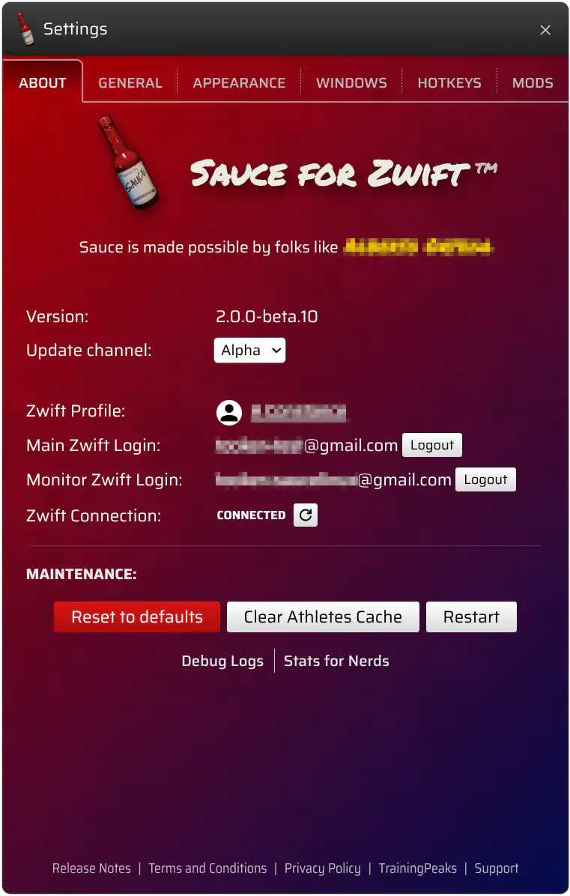

Designed and created in Idaho, so you know it's real good
HINT: Zwift needs to be in "windowed" mode
Sane defaults...
but you can pretty much change everything

The main application settings window
Mind the gap
Say hello to real race craft with group gaps
Also has a horizontal mode and zoomed-in view
Interactive Map
I wrote this from scratch and it was a ton of fun
Breath life into your zwift map with pointer controls
A tweaker's delight
Am I allowed to say tweaker still/yet?
Pour a cup of something and dig into this for an hour or two
This is gonna sound crazy
but what if the chat messages didn't just clobber on top of themselves?
Other / More / I'm tired of screen capturing
Since I'd rather spend my time programming than maintaining goofy websites.
Here are the other things worth mentioning..
Requirements
Patreon membership
Let's be honest, this is pretty niche software. I'm just looking to make an honest wage and at present that means a very small monthly patronage is required.
However, here is your free-trial hack. Patreon doesn't bill until the 1st of the month. Subscribe, try Sauce, and cancel before the following 1st and you'll not be charged.
A Zwift account - duh
A second Zwift account - wait, what!?
Don't panic
This is technical detail and you do NOT need to pay for a second Zwift account.
Zwift's network doesn't allow multiple connections with the same login.
Sauce has its own connection, so it needs its own "monitor" account too. Because it only "Fan Views", you don't need active billing on this account.
You don't need to write all this down. Just Download Sauce and launch it. It will guide you through the process.
Mods
Short for modifications, they are security sandboxed packages modelled after
browser extensions.
Code is only executed in a Web Browser context. As such, they only work with web tech like JavaScript, WASM, HTML and CSS.
All Zwift data is exchanged directly between your computer and Zwift servers. No cloud storage,
no proxying of data. It's just you and Zwift.
Sauce is built on Electron,
which is built on Chromium,
so in short, you're running a specialized web browser that understands the Zwift network protocols.